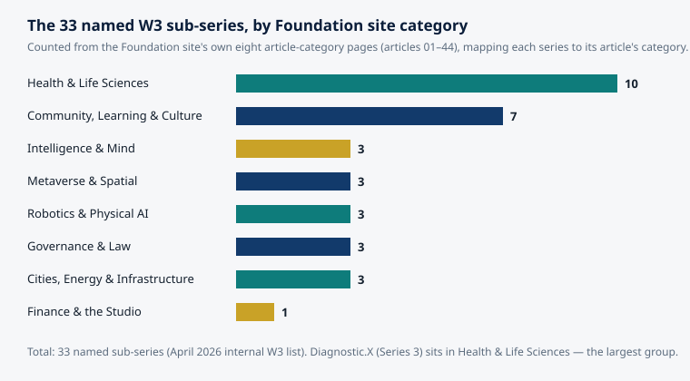

Article 54 · Diagnostic.X · AGI Future Foundation
Screening Is Not Diagnosis: The Line That Matters, and Why It Is So Often Crossed
Here is what is true. Diagnostic.X is Series 3 in the April 2026 internal list of 33 named W3 sub-series, and the AGI Future Foundation — the steward of the W3 plan — describes it on its site as AI diagnostics governed by a safety mandate. The Foundation itself is a filed California Nonprofit Public Benefit Corporation, Entity No. B20260196664, with Articles filed on 2026-04-24. A Diagnostic.X world is anchored in the Foundation's metaverse work at RP1 coordinates 5.343, 101.566, though it does not render fully today.
Chart: the 33 named W3 sub-series grouped by the Foundation site's own eight article categories, counted from the site's category pages by mapping each series to its article's category. Source: the Foundation site's article-category pages (articles 01–44) and the April 2026 internal W3 list of 33 named sub-series. Diagnostic.X (Series 3) is in Health & Life Sciences.
What is true, and what is not
That line is the subject because it is the line Diagnostic.X would have to respect first, before anything else. The Foundation's own framing for the series is screening support and referral — flagging change against a person's own usual pattern and pointing toward a clinician — never a diagnosis. That is a deliberately narrow scope, and it is narrow for good reasons. This article explains those reasons, drawing on the public-health literature that has policed this boundary for more than half a century.
Two different questions
Screening and diagnosis answer different questions, for different people, at different moments.
Screening asks: among people who feel fine and have no symptoms, who needs a closer look? It is something done to a population — or to a defined group within it — to find the possible presence of a disease that has not yet declared itself. The person being screened is, as far as anyone knows, well. The test is a sieve. Most people pass through it. A small number are caught, and those people are sent for something else: a diagnostic work-up.
Diagnosis asks: this person has a symptom, a sign, or a positive screen — what is wrong with them? It is something done to an individual, usually someone who is already worried or unwell, and it aims at a name: a condition, a cause, a course of action. The diagnostic test is the instrument that settles the question, or comes as close to settling it as medicine can.
The distinction sounds obvious stated that plainly, and in a textbook it is. In practice it is crossed constantly — by marketing copy, by product design, by the way results are displayed on a screen, and by the understandable human desire for a test result to be an answer. A screening result that reads like a verdict is a design failure, even if the underlying test is excellent. A tool that says "you have X" is claiming a diagnosis, and it had better be able to defend that claim the way a diagnosis must be defended: with a reference standard, a clinician who owns the decision, and a regulatory status that permits the claim.
Where the boundary comes from
The modern rules for screening were written in 1968, when J. M. G. Wilson and G. Jungner published Principles and Practice of Screening for Disease for the World Health Organization. Their ten criteria have been the standard frame for judging screening programmes ever since, and they remain the clearest statement of why screening is a much bigger undertaking than building a test.
The Wilson and Jungner criteria are, in brief: the condition should be an important health problem; there should be an accepted treatment for patients with recognized disease; facilities for diagnosis and treatment should be available; there should be a recognizable latent or early symptomatic stage; there should be a suitable test or examination; the test should be acceptable to the population; the natural history of the condition should be adequately understood; there should be an agreed policy on whom to treat as patients; the cost of case-finding should be economically balanced in relation to possible expenditure on medical care as a whole; and case-finding should be a continuing process, not a one-off event.
Read that list slowly and notice what it does. Only one of the ten criteria is about the test itself. The other nine are about the world around the test: whether treatment exists, whether clinics can absorb the people the test flags, whether anyone knows what to do with the borderline cases the test will inevitably produce, and whether the whole enterprise is worth its cost in money, anxiety, and harm. Wilson and Jungner understood something that every generation of diagnostic technology has had to relearn: a test is the easy part. A screening programme — the test plus the follow-up, the treatment, the counselling, the quality assurance, and the continuing process — is the hard part, and it is the programme, not the test, that helps or harms people.
The criteria also contain a moral warning that is easy to miss. The second criterion — there should be an accepted treatment — is, in Wilson and Jungner's own discussion, perhaps the most important of all. Screening people for a condition you cannot treat, or cannot treat any better for having found it early, does not help them. It labels them: it can frighten them and set them on a path of further testing, without any benefit to set against those harms. The Hippocratic principle the criteria invoke, primum non nocere — first, do no harm — applies to screening with special force, because screening is done to healthy people. A screening test given to a well person has to justify itself from scratch, and "we can detect it" is not a justification.
Later frameworks, such as the UK National Screening Committee's criteria, extended the same logic: they demand evidence from high-quality randomized controlled trials that the screening programme reduces mortality or morbidity, an agreed policy on further diagnostic investigation for people with positive results, and evidence that the complete programme is clinically, socially, and ethically acceptable. The benefit must outweigh the physical and psychological harm, and the opportunity cost must be economically balanced against other uses of the same money. The UK criteria are worth reading in full, because they make explicit what Wilson and Jungner implied: the unit of evaluation is never the test alone.
The sieve and the lens
Once the programme-level view is in place, the difference between a screening test and a diagnostic test becomes a matter of design, and the two designs pull in opposite directions.
A screening test should be simple, cheap, safe, acceptable to the people taking it, and easy to perform and interpret. It should be sensitive — good at catching the people who have the condition — because a screening test that misses cases defeats its own purpose. And, as Wilson and Jungner noted, a screening test may accept a higher false-positive rate than a diagnostic test, because a positive screen is not a verdict; it is a referral for a better test. What a screening test must not do is miss people.
A diagnostic test is the opposite kind of instrument. It is used on a small number of people who are already suspected of having the condition, so it can be more complex, more expensive, more invasive, and slower. What it must be is definitive — or as close to definitive as the state of medicine allows. It is the reference against which the screening test is judged, the standard that decides whether the screen was right. A diagnostic test that is wrong is not a screening error to be caught downstream. It is the downstream.
This is why the two kinds of test are evaluated differently, and why a single accuracy number can mislead so badly. A test with 95% sensitivity sounds impressive until you ask: sensitivity for what, in whom, at what threshold, against what reference standard, and with what consequence for the people it flags wrongly? The companion article in this series, on how diagnostic support tools are evaluated, takes that question apart in detail. The point here is simpler: sensitivity and specificity are properties of a test in a studied population, and they say nothing by themselves about whether screening a real population with that test will do more good than harm. That depends on how common the condition is, what happens to the people flagged, and whether the follow-up exists. In a screening population, most people do not have the condition, so even a good test produces many false positives relative to true positives when the condition is rare — a consequence of arithmetic, not bad engineering. Every false positive is a person who was well, is now worried, and is now consuming diagnostic capacity. A screening programme with no agreed policy for them has not finished its design.
How the line gets crossed
If the distinction is so well established, why is it crossed so often? There are at least five recurring ways, and each of them is visible in the current wave of AI diagnostic tools.
First, language. A product that says "detects early signs of X" is describing screening. A product that says "diagnoses X" is claiming diagnosis. Between those two phrases sits a spectrum of hedged wording — "identifies," "flags," "assesses your risk of," "AI-powered health check" — much of it chosen because it sounds like a diagnosis while remaining deniable as one. The user hears the diagnosis; the vendor, if challenged, points to the hedge. The gap between what is heard and what is defensible is where the harm lives: a person who believes they have been diagnosed acts differently from a person who believes they have been flagged for a closer look.
Second, the interface. A result displayed as a red badge, a percentage, or a single stark word ("ABNORMAL") reads as a verdict regardless of the small print beneath it. Design choices are claims. A screening-support tool that wants to be honest has to design its outputs as referrals, not verdicts: the flag, the reason in plain language, the uncertainty stated in the same size type as the result, and the next step named as a human appointment.
Third, the demo. A screening tool is usually demonstrated on the cases it handles well: clear signals, textbook presentations, the kind of data it was trained on. The borderline cases — the people who are neither clearly normal nor clearly abnormal, the ones Wilson and Jungner warned would need an agreed policy — rarely appear in a demo. But in a real screening population, borderline cases are a large share of what the tool will actually produce, and a tool with no policy for them has no policy for its own output.
Fourth, the population shift. A test validated in a clinic, on people who were already suspected of having a condition, is often deployed on a general population where the condition is far rarer. When that happens, the test's predictive value collapses — the same sensitivity and specificity, a completely different meaning — and a tool that was honest in the clinic becomes misleading in the wild. This is not a hypothetical failure mode. It is the most predictable one in the field, and it is the reason evaluation must be done in the population where the tool will actually be used, not the population where it was convenient to test it. A related commercial pressure pushes the same way: screening scales, while diagnosis requires a clinician, a licence, a regulated claim, and accountability for being wrong — so the business incentive points directly across the line, hardest for the companies with the least clinical infrastructure behind them.
What crossing the line costs
The costs of crossing the line are not abstract. They fall into four groups, and each is well documented in the screening literature.
False positives and the cascade. A positive screen that is not a diagnosis sends a well person into the diagnostic system: further imaging, invasive procedures, time off work, cost, and the anxiety of waiting. Most cascades end with relief — the person did not have the condition — but the relief does not erase the cost, and the cost is multiplied across every false positive a programme produces. At population scale, a small false-positive rate is a large number of people.
Overdiagnosis. This is the subtlest and most serious harm: overdiagnosis is the identification of abnormalities that would never have caused a problem in the person's lifetime. The abnormality is real and the test was not wrong — but the label changes the person's life for a condition that would never have harmed them. The more sensitive the test, the more overdiagnosis it can produce, which is why "more sensitive" is not a synonym for "better" in screening.
False reassurance. A negative screen is not a clean bill of health — it is a statement that this test, on this day, did not flag this person. If the person ignores a symptom because the app said they were fine, the screen has harmed them precisely by reassuring them. False reassurance is the mirror image of the false positive, and it is harder to count, because the people it harms are the ones who do not come back.
Inequality. Screening programmes do not reach everyone equally. The people most likely to use a new screening tool are often the worried well, with time, money, and access, while the people at highest risk are least reached — and the diagnostic capacity consumed by false positives is capacity taken from people who are actually ill. A screening tool adopted unevenly can widen the very gaps it claims to close, and the widening is invisible if nobody measures who uses it and who gets the follow-up.
None of these harms is an argument against screening. Screening, done properly, is one of the great achievements of public health — cervical cancer screening is the classic example, a programme that works precisely because it was built as a programme, with the test, the follow-up, the treatment, and the quality assurance designed together. The harms are an argument against careless screening: screening as a feature, screening as a demo, screening as a claim made by a tool that has no plan for the people it flags.
What a responsible screening-support tool does
This is where the abstract principles become a design brief — and where the proposed scope of Diagnostic.X, screening support and referral only, earns its narrowness. A responsible screening-support tool, whether or not it is ever built under that name, would have to do the following, and each item is a test a reader can apply to any tool that claims this territory.
It names its population. Who is this for, and who is it not for? A tool built for one group and used on another is a different tool, and its numbers no longer apply. The exclusions matter as much as the inclusions. The first FDA-authorized autonomous AI diagnostic system, IDx-DR (now LumineticsCore), which detects more than mild diabetic retinopathy, came with explicit exclusions — people with a history of laser treatment, surgery, or injections in the eye, people with symptoms such as persistent vision loss, people already diagnosed with severe retinopathy, and pregnant patients. The exclusions were part of the authorization, not a footnote to it.
It states its output as a referral, never a diagnosis. The output of a screen is a recommendation about what to do next, and the next step is a human clinician. The tool does not name a disease as present. It says, in effect: this pattern is worth a closer look, by a named kind of clinician, within a named timeframe — and it says what to do if that clinician cannot be reached.
It reports its uncertainty in the open. A screening flag without a measure of confidence is a verdict wearing a lab coat. The tool should show how often it flags people who turn out not to have the condition, how often it misses people who do, and in whom it performs worst — by age, by sex, by the quality of the input data. "Worst in whom" is the question that separates a serious tool from a demo, and it is the question most often left unanswered.
It plans for the flagged. A screening tool that cannot answer "and then what?" has not finished. Who receives the referral? What does the receiving clinician get — the raw data, the reasoning, or just a score? How long does the person wait? Wilson and Jungner's third criterion — facilities for diagnosis and treatment should be available — is a requirement on the programme, and a tool that generates referrals into a system with no capacity is generating a queue, not care.
It measures itself in the real population, continuously. Performance measured once, on a curated dataset, is a starting point, not a verdict. Real populations drift: the people change, the devices change, the way the tool is used changes. A screening-support tool needs a monitoring plan — who watches the false-positive rate, who notices when the flagged population shifts, who has the authority to pause the tool — and that plan needs a named human owner.
It accepts the boundary as a feature, not a limitation to be engineered around. The line between screening and diagnosis is not a temporary inconvenience that better models will erase. It is a division of labour between a tool that sorts and a clinician who decides, and it exists because the decision carries consequences that no score can carry for a person. A tool that respects the line is not a weaker tool. It is an honest one, and honesty is the only basis on which a screening tool can be trusted at scale.
Screening versus diagnosis, side by side
| Screening | Diagnosis | |
|---|---|---|
| Question asked | Who, among people without symptoms, needs a closer look? | What is wrong with this person? |
| Population | A defined group, mostly well people | An individual, usually symptomatic or already flagged |
| Aim | Sort: separate the few who need follow-up from the many who do not | Settle: name the condition and guide treatment |
| Test design | Simple, cheap, safe, acceptable; high sensitivity | Definitive; may be complex, costly, or invasive |
| A positive result means | Referral for diagnostic testing | A condition is present (to the limits of the test) |
| A negative result means | Not flagged this time — not a clean bill of health | Condition ruled out (to the limits of the test) |
| False positives | Expected; managed by the follow-up pathway | A diagnostic error |
| False negatives | The key failure — cases missed | A diagnostic error |
| Who decides | A clinician, after diagnostic work-up | A clinician, owning the decision |
| Evaluated by | The whole programme: test, follow-up, treatment, outcomes | Accuracy against a reference standard, in the relevant patients |
Where Diagnostic.X fits — and where it does not
Diagnostic.X, as proposed, sits on the screening side of this line, and this article has been written to explain why that placement matters rather than to promote it. The series is Series 3 in the April 2026 internal list of 33 named W3 sub-series, and the Foundation site describes it as AI diagnostics governed by a safety mandate. That description is site copy, not a filing and not evidence of a working system. The verified record is narrow: the name and number, the published direction, and an anchored metaverse world at 5.343, 101.566 whose fabric definition is published but whose assets are not yet hosted, so it does not render fully.
The chart below places Diagnostic.X in context. Of the 33 named sub-series, ten fall in the Foundation site's Health & Life Sciences category — the largest of the site's eight categories — and Diagnostic.X is one of them. The concentration is worth noting: a third of the proposed portfolio touches health, which is also the domain where the line between screening and diagnosis carries the highest stakes.

What would have to exist before Diagnostic.X could do real screening-support work is a long list, and the Foundation's own article on the series names it honestly: a written scope naming the first use and the first user; a safety threshold set in writing, with a named human who owns it; test data and a test protocol a reviewer can inspect, including the cases the system handles worst; a named clinician accountable for every output, with agents supporting and never deciding; regulatory counsel on what the system may and may not claim in every jurisdiction it touches; and a record-keeping design that survives an audit. None of those exists in a verified document today. Until they do, the correct description of Diagnostic.X is the one this article has used throughout: a proposed series with a stated direction and a boundary to respect, not a tool anyone can use.
The governance the Foundation plans for its series is relevant here, because the boundary between screening and diagnosis is ultimately a governance question, not a technical one. In the intended model, each series would be DAO-managed day to day — agents operating routine work within limits set by humans — with a human Steward Council deciding everything that carries legal, financial, or clinical consequence. Agents prepare; humans execute, and agents never decide a diagnosis. That model is itself only a plan: no Steward Council is verified as seated for Diagnostic.X and no charter has been signed. But the principle it encodes is the same one this article has argued for: the decision belongs to a named human, and the tool's job is to make that human's decision better informed, not to replace it.
The Foundation's fundraising, as filed, is donation and grant only. Nothing in this article offers securities, and no price, terms, or return is promised. Readers who want to support the Foundation's work — including the slow, unglamorous work of setting safety thresholds and writing referral pathways before any tool is built — can find the Foundation at agifuturefoundation.org. Donations are not claimed to be tax-deductible: no IRS 501(c)(3) determination letter is on file for the Foundation.
Questions to ask any screening claim
The next time a tool, an article, or a pitch tells you it can detect disease early, ask these questions. They are the Wilson and Jungner criteria in plain language, and a tool that cannot answer them is not ready — whatever its accuracy number says.
- Who is it for, and who is it not for? If the answer is "everyone," the tool has not defined its population.
- What happens to a person who is flagged? If there is no named next step with a named clinician, there is no programme — only a test.
- How often is it wrong, and in whom? Ask for false positives and false negatives separately, in the population where it will be used, and for the subgroups where it performs worst.
- What does a negative result mean? If the answer sounds like a clean bill of health, the tool is overclaiming.
- What about overdiagnosis? Has anyone estimated how many people will be labelled with something that would never have harmed them?
- Who owns the decision? A named clinician, accountable for the outcome — or a score with no one behind it?
- Who watches it after launch? Performance drifts. Who notices, and who can pause it?
- What is the evidence that the whole programme helps? A test accuracy number is not evidence that screening helps people. Evidence that screening helps is evidence about outcomes: fewer deaths, less suffering, at acceptable cost and harm.
Glossary
Screening — Testing a defined group of people without symptoms to identify those who may have a condition and need diagnostic follow-up. A sieve, not a verdict.
Diagnosis — The process of identifying the condition causing a person's symptoms, signs, or positive screen, usually by a clinician using diagnostic tests against a reference standard.
Reference standard (gold standard) — The best available method for deciding whether the target condition is truly present, against which a new test is judged.
False positive — A positive result in a person who does not have the condition. In screening, false positives are expected and managed through follow-up; they are not harmless.
False negative — A negative result in a person who does have the condition. In screening, this is the key failure: a case missed.
Overdiagnosis — Identifying an abnormality that would never have caused symptoms or harm in the person's lifetime. The test was not wrong; the finding did not need finding.
Sensitivity — The proportion of people with the condition whom the test correctly identifies. High sensitivity means few cases missed.
Specificity — The proportion of people without the condition whom the test correctly identifies as negative. High specificity means few false alarms.
Positive predictive value (PPV) — The probability that a person with a positive result actually has the condition. It depends heavily on how common the condition is in the tested population.
Case-finding — Wilson and Jungner's term for the continuing process of identifying cases in a population, as opposed to a one-off test.
Frequently asked questions
No. Earlier detection is better only when three things are true: the condition can be treated, treating it earlier leads to better outcomes than treating it later, and the harms of finding it — false positives, overdiagnosis, anxiety, invasive follow-up — are smaller than the benefit. When any of those fails, earlier detection can harm healthy people. That is the whole point of the Wilson and Jungner criteria.
"99% accurate" is not a complete description of a test, and it can hide a great deal. Accuracy depends on how common the condition is in the tested population: a test can be 99% accurate overall and still produce mostly false positives when the condition is rare. The companion article in this series explains why, with the arithmetic worked through. Always ask for sensitivity and specificity separately, and for the predictive value in the population where the test will actually be used.
A screening tool sorts people and refers them; a diagnostic device supports or makes a diagnosis. The difference is partly regulatory — in the United States, a device that diagnoses is regulated by the FDA, and the FDA maintains a public list of authorized AI-enabled medical devices — and partly about accountability: a diagnosis is owned by a clinician. A tool that calls itself screening support while presenting verdicts is crossing the line in practice whatever it says on paper.
No. Diagnostic.X is a proposed series, not an operating tool, and its stated scope is screening support and referral only. Nothing described in this article diagnoses anyone, and nothing here should be used as a substitute for a clinician's judgement. If you have a symptom or a concern about your health, see a clinician.
Because the line is where the harm happens. The technology of detection improves every year; the discipline of using it well does not improve by itself. Every generation of diagnostic technology has had to relearn that a test is not a programme, a flag is not a diagnosis, and "we can detect it" is not a reason to screen for it.
References
- Wilson JMG, Jungner G. Principles and Practice of Screening for Disease. Geneva: World Health Organization; 1968. Criteria summarized at MedicalCriteria.com.
- UK National Screening Committee criteria for appraising screening programmes, summarized at GP Training.
- Hazra A, Gogtay N. Biostatistics Series Module 7: The Statistics of Diagnostic Tests. Indian Journal of Dermatology. 2017;62(1):18–24. PMC5286748.
- U.S. Food and Drug Administration. List of Artificial Intelligence-Enabled Medical Devices. Updated 4 September 2026. FDA.
- U.S. Food and Drug Administration. FDA permits marketing of artificial intelligence-based device to detect certain diabetes-related eye problems. Press announcement, 11 April 2018. FDA.
- AGI Future Foundation. Diagnostic.X — AI Diagnostics Governed by a Safety Mandate. agifuturefoundation.org.
- AGI Future Foundation. Articles index and category pages. agifuturefoundation.org.
Status note: Diagnostic.X (W3 Series 3) is a proposed series in the April 2026 internal list of 33 named W3 sub-series. It is not formed, funded, or offered. The AGI Future Foundation is a California Nonprofit Public Benefit Corporation, Entity No. B20260196664, Articles filed 2026-04-24. No IRS 501(c)(3) determination letter is on file, and donations are not claimed to be tax-deductible. Nothing in this article is medical advice, a diagnosis, or a recommendation about any test or treatment. If you have a health concern, consult a qualified clinician.